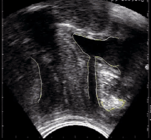
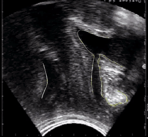
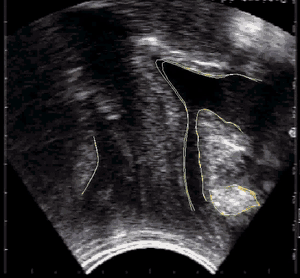
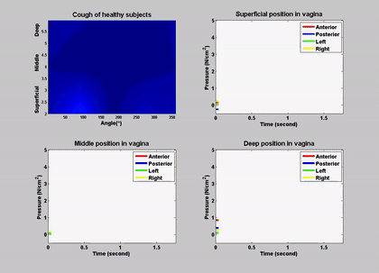
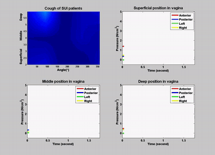
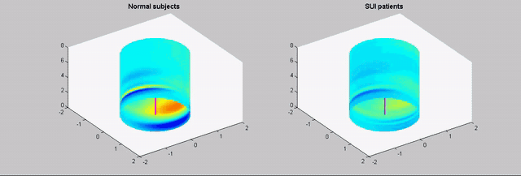
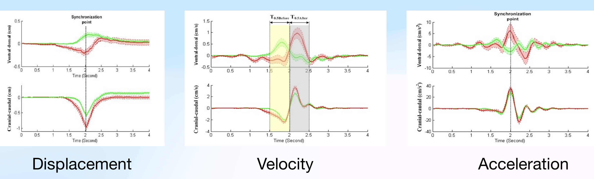

DisplacementIllustrative normalized units
BIOMEDICAL IMAGING · INTERACTIVE EXPLORER
Motion tells a story.
Explore pelvic-floor motion during contraction, cough, and Valsalva—from displacement to velocity and acceleration.
Explore GitHub repository ↗
01 / ORIGINAL RESEARCH ANIMATIONS
Explore the anatomy model ↓🎬 See it in action
Three functional states, three annotated ultrasound animations from the research repository. Use these as qualitative demonstrations of movement; the overlays are not calibrated measurement traces.



Original annotated clips from the research repository, not generated by the browser lab. Mentor-owned clinical imaging: confirm permission before publicly publishing or redistributing these animations.
Explore companion pressure animations (3) +



02 / ANATOMY + MATHEMATICAL INTERPRETATION
Schematic model · not a traced patient imageEvery line has a meaning: a sagittal landmark model
A mid-sagittal schematic, oriented like a perineal ultrasound view, with the pubic symphysis as the fixed reference. Scrub time to see the tracked landmark move, and watch the equations evaluate live.
Baseline P₀ P(t) y = 0: line at inferior symphysisRed arrow = Δr(t), a displacement, not force or pressure
LIVE VALUES · REFERENCE FRAME
Equations evaluated at the cursor
Definitions
Choose a landmark, fix an image frame at the symphysis, and track its position over time. Signs: +x anterior, +y cranial.
Position of a tracked landmark
Displacement from baseline (frame-fixed to the symphysis)
Velocity and acceleration (units mm/s and mm/s²)
Discrete estimates from video frames (sampling interval Δt)
Pixel → millimetre calibration
Illustrative trace model used in the demo (sum of Gaussian events)
The traces use an arbitrary illustrative scale (landmark travel ≈ 1 cm). In a real study x and y come from tracked pixels converted to millimetres with the calibration factor s.
Cough: ventral-dorsal and cranial-caudal components

03 / TRY THE BROWSER LAB
Illustrative simulation · not patient dataExplore a motion trace
VelocityFirst numerical derivative
AccelerationSecond numerical derivative
WHAT THE DEMO SHOWS
Press Run motion demo to generate an illustrative trace and its derivatives.
Peak |displacement|—
Peak |velocity|—
Peak |acceleration|—
These mathematically generated traces illustrate analysis methods only. They are not ultrasound measurements, trained predictions, clinical thresholds, or the study's quantitative findings.
04 / CLINICAL CONSIDERATIONS
Educational · physician review requiredFrom motion to patient care: what a clinician must weigh
Ultrasound motion is evidence, not a diagnosis. Each maneuver answers a different clinical question, and each carries its own technical and interpretive caveats.
Does urethral support respond fast enough to a sudden pressure rise?
Stress urinary incontinence (SUI) is leakage with cough, sneeze or exertion, when abdominal pressure transiently exceeds urethral closure. A cough is a short impulse, so timing as well as magnitude matters.
Bladder-neck and urethral mobility, in real time
Tracking the urethra and bladder neck during cough gives displacement, velocity and acceleration, quantities a static image or a symptom score cannot supply.
Mechanisms differ
Hypermobility and weak sphincter function are distinct causes. Bladder filling, posture and probe pressure change the picture, so imaging complements history, examination and, where indicated, urodynamics.
Can a pre-timed contraction protect against cough leakage?
“The Knack” is a deliberate pelvic-floor contraction just before and during a cough. The presentation cites Miller et al. (1998): a significant reduction in cough-related urine loss in women with mild SUI within one week.
Direction, magnitude and timing of support
Ultrasound shows whether the urethra is compressed and lifted toward the pubic bone, and how early the contraction begins relative to the cough peak.
Not a universal cure
Benefit depends on a correct contraction, which may need examination or biofeedback to confirm, and on practice and adherence. Percent-leakage reductions are group findings, not individual predictions.
How far do pelvic organs descend under sustained load?
Straining (Valsalva) raises abdominal pressure and tests support. Caudal descent of the bladder neck and the anorectal junction (ARJ) informs assessment of organ mobility and prolapse.
Quantified descent relative to a fixed bone landmark
Measuring from the pubic symphysis gives a reference that moves little, so displacement can be reported in millimetres and compared across sessions.
Effort quality is a confounder
An incomplete strain, or an unintended levator co-contraction, understates descent. Standardized instruction and repeated efforts are essential.
Which motion features are repeatable and clinically relevant?
The study imaged 23 asymptomatic volunteers, a reference for normal motion. Conclusions about patients with SUI or prolapse need patient cohorts, not extrapolation.
Calibration, uncertainty, repeatability
Pixel-to-mm scaling, landmark-tracking error, frame timing, inter-observer agreement and test–retest repeatability turn a trace into a measurement.
Compare groups and outcomes
Compare healthy and SUI cohorts, and relate kinematic features such as peak velocity and time-to-peak to symptoms and to treatment response.
Clinical considerations checklist
1 · Patient context
Symptoms, parity, prior surgery, medications and bladder diary frame every image.
2 · Standardized technique
Bladder volume, posture, probe pressure and instruction wording alter results.
3 · Reference frame
Anchor measurements to the pubic symphysis and state the axes and sign convention.
4 · Quantities, not just pictures
Report displacement, velocity and acceleration with units and uncertainty.
5 · Scope of inference
Healthy-volunteer findings do not define thresholds for patients.
6 · Clinician review
Interpretation, diagnosis and treatment belong with a qualified physician.
Clinical reasoning pathway
Functional maneuverUltrasound landmark trackingDisplacement · velocity · accelerationClinical interpretation
Illustrative research workflow; this page performs no diagnostic classification or patient-level inference.
05 / EVIDENCE + RESEARCH NEXT STEPS
What is demonstrated—and what remains to be measured
Available in this portfolio
Original annotated ultrasound and pressure animations, a research presentation, measured kinematic figures, and a transparent mathematical browser demonstration of kinematic derivatives.
Needed for quantitative conclusions
Permission-cleared, calibrated frame sequences; landmark annotations; frame timestamps; repeated measurements; quality control; participant-level data governance; and uncertainty estimates.
Next analysis opportunities
Plot actual bladder-neck and ARJ trajectories, compare cough versus pre-contraction timing, report displacement/velocity/acceleration with units and uncertainty, and assess repeatability before clinical interpretation.
Clinical information is contextual, not individualized medical advice. Findings in asymptomatic volunteers cannot automatically be generalized to people with SUI or prolapse.
06 / RESEARCH CONTEXT
From ultrasound to interpretable motion
Acquire
Perineal ultrasound captures dynamic pelvic-floor anatomy across functional conditions.
Track
Measure displacement of relevant anatomical landmarks over time.
Differentiate
Derive velocity and acceleration from the displacement series.
STUDY MATERIALS
What the supplied presentation reports
The project presentation describes perineal ultrasound using a 5.5 MHz elliptical probe in 23 subjects (mean age 31.1 ± 13.6 years). It discusses voluntary contraction, Valsalva, and cough. The presentation reports urethral support during voluntary contraction and no significant caudal displacement during cough. These statements come from the project presentation, not conclusions from this browser demo.
23subjects reported
5.5 MHzprobe reported
3test conditions
07 / SOURCES & SCOPE
Research documentation
Project: Functional Imaging of Pelvic Floor Muscles: Ultrasound Scanning of Asymptomatic Subjects. Researcher: Aaryan Samanta. Mentored by Dr. Christos E. Constantinou. This educational companion is not an official Stanford website or a clinical diagnostic tool.
View research repository ↗ Open research presentation PDF ↗This local demo package includes the six animated GIFs from the research repository for local review. The repository identifies mentor-owned clinical imaging and third-party media as rights-restricted. Confirm authorization before publishing the GIFs on a public website. No original computational source code or measurement tables were included in the archive.